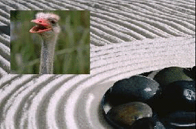
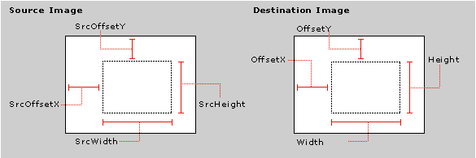

[The feature associated with this page, DirectShow, is a legacy feature. It has been superseded by MediaPlayer, IMFMediaEngine, and Audio/Video Capture in Media Foundation. Those features have been optimized for Windows 10 and Windows 11. Microsoft strongly recommends that new code use MediaPlayer, IMFMediaEngine and Audio/Video Capture in Media Foundation instead of DirectShow, when possible. Microsoft suggests that existing code that uses the legacy APIs be rewritten to use the new APIs if possible.]
[!Note]
[Deprecated. This API may be removed from future releases of Windows.]
Â
The Compositor transition composites a subrectangle from the foreground into a designated rectangle on the background, without altering the rest of the background. Use this transition to create split-screen or picture-in-picture effects.
The following image shows the compositor transition:

Class ID (CLSID): {BB44391D-6ABD-422f-9E2E-385C9DFF51FC}
CLSID Variable Name: CLSID_DxtCompositor
Friendly Name: "DxtCompositor"
Properties
| Property | Type | Default | Description |
|---|---|---|---|
| Height | long | 0 | Height of the target rectangle, in pixels. |
| OffsetX | long | 0 | Horizontal offset of the target rectangle, in pixels. |
| OffsetY | long | 0 | Vertical offset of the target rectangle, in pixels. |
| SrcHeight | long | 0 | The height of the subrectangle on the source, in pixels. |
| SrcOffsetX | long | 0 | The x-coordinate of the subrectangle on the source, in pixels. |
| SrcOffsetY | long | 0 | The y-coordinate of the subrectangle on the source, in pixels. |
| SrcWidth | long | 0 | The width of the subrectangle on the source, in pixels. |
| Width | long | 0 | Width of the target rectangle, in pixels. |
Â
The following diagram illustrates these properties:

Â
Â